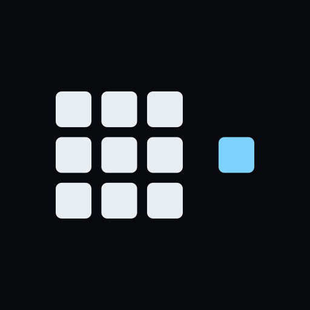

mark.svg · ≥24px
compact · 32
icon.svgA block of ledger cells and one cell outside it. The outsider is the same size and shape as every cell in the block because it is the same kind of thing — a verification node. Only its position differs, and position is the whole argument: a signal counts when its producer sits outside the boundary of the thing being checked. The empty slot between block and outsider is exactly one cell wide; it is the cell that would have been inside, left empty on purpose.
Rules. Below 24px use mark-compact.svg — it is a redraw, not a scale, because the 3×3 block stops resolving. Clear space is one cell on every side. On paper use the -on-light variants, which make design-sync derives from the originals so the geometry has one source. Never recolor the outsider to a verdict hue: it is the accent, and the accent is Keel's own voice, not data. Never stretch, rotate, outline, add a gradient, or place the mark on a busy photograph.